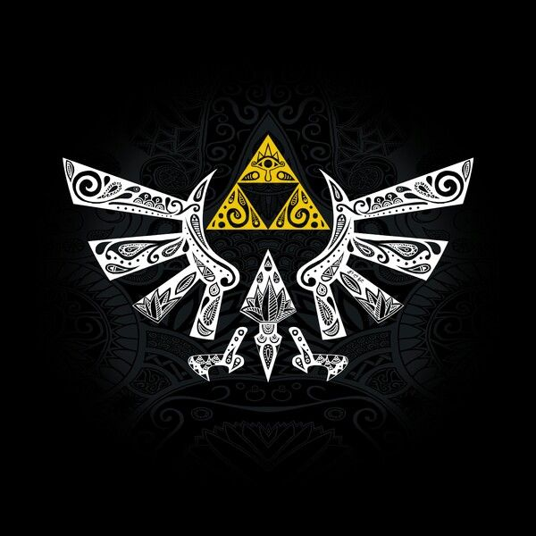

- Tanque
- Clase de personaje cuya mayor habilidad o principal funcion es soportar una gran cantidad
de daño y atraer los ataques de los enemigos, con el fin de proteger al resto del equipo.
|
|
- Tóxico
- Es un jugador que solo intenta molestar o interrumpir una partida, insultando, gritando,
jugando de manera inadecuada, etc.
|
|
- Textura
- Imagen en dos dimensiones que se aplica sobre un objeto en tres dimensiones para cubrirlo y simular
una superficie.
|
|
- Trifuerza
- Reliquia sagrada compuesto de tres triangulos que representa el equilibrio de los tres grandes poderes
(Valor, Sabiduria, Poder) con los que las diosas crearon el mundo. Cuando los tres triangulos estan unidos,
Aquel que le toque podra pedir un deseo que durara hasta que muera o hasta que se complete. Elemento Fundamental
e iconico de la saga The Legend Of Zelda.
|

|
- Triple A
- De forma similar alas denominadas superproducciones del cine, los videojuegos triple A son aquellos desarrollados por grandes empresas de videojuegos
y cuentan con grandes presupuestos para su produccion y promocion.
|
|